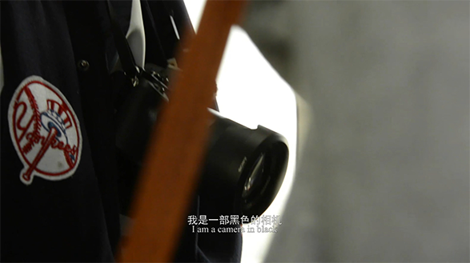

镜头中的映象来自于你的内心
世界就像一个万花筒，其中的图景并非一成不变
黑与白对立却也能融合
历史不会消失，未来也不会终止
镜观黑白，静观世变
世界就像一个万花筒，其中的图景并非一成不变
黑与白对立却也能融合
历史不会消失，未来也不会终止
镜观黑白，静观世变
片名解释
本部微电影主要讲述的是两台相机的故事。首先我们选取的是LENS作为片名，因为在词典中Lens主要有两个解释，一指镜头，二指人眼中的晶状体，这恰好契合了我们影片的主旨。镜头是我们的另一双眼睛，透过镜头，我们看到一个也许主观，也许客观的世界。中文片名中的“镜观”又谐音“静观”，指用镜头和我们的眼睛安静地看待世间的各种变换，完整的认识我们身处的世界。
本部微电影主要讲述的是两台相机的故事。首先我们选取的是LENS作为片名，因为在词典中Lens主要有两个解释，一指镜头，二指人眼中的晶状体，这恰好契合了我们影片的主旨。镜头是我们的另一双眼睛，透过镜头，我们看到一个也许主观，也许客观的世界。中文片名中的“镜观”又谐音“静观”，指用镜头和我们的眼睛安静地看待世间的各种变换，完整的认识我们身处的世界。

拍摄目的
通过对黑相机拍摄负面世界，白色相机拍摄正面世界的方式，让大家能够意识到我们不能孤立地看待这个世界，因为我们身处的社会有好有坏、有黑有白。同时，通过对北京城市变迁和信息时代人们生活方式的记录，让大家能够重拾古朴和宁静，勿忘传统。
通过对黑相机拍摄负面世界，白色相机拍摄正面世界的方式，让大家能够意识到我们不能孤立地看待这个世界，因为我们身处的社会有好有坏、有黑有白。同时，通过对北京城市变迁和信息时代人们生活方式的记录，让大家能够重拾古朴和宁静，勿忘传统。